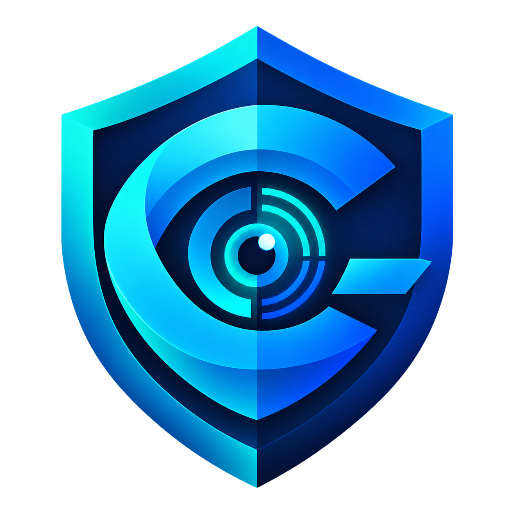

01
Choose brands to protect
Add up to three official websites to the watchlist. CyberSentinel uses these domains as the reference for discovery and monitoring.

CyberSentinelCyberSentinel helps teams find suspicious lookalike domains, gather useful evidence, and prioritize investigations. It combines automated discovery with an analyst review workflow.
Add up to three official websites to the watchlist. CyberSentinel uses these domains as the reference for discovery and monitoring.
On-demand scans generate common typo and impersonation variations, then check Certificate Transparency sources for related domains.
For discovered domains, the project can check DNS and site reachability, inspect pages for login forms, capture screenshots, compare visual similarity, and gather WHOIS/RDAP details.
Risk scores help sort findings for review. Analysts can examine the evidence, generate PDF incident dossiers, and prepare registrar abuse notices.
The background monitor can listen to CertStream for newly issued certificates and compare observed domains with the configured watchlist. Monitoring status and findings are shown in the dashboard.